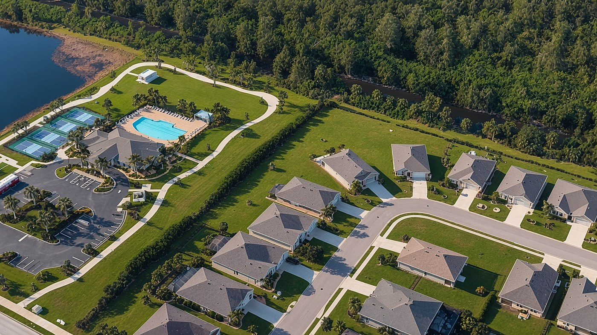

Draft preview for review. Not published. New Page for /explore/punta-gorda/waterford-estates/. Goes live 2026-12-04. Images shown from local copies. Rollout batch
Waterford Estates, Punta Gorda: Newer Homes and Townhomes Near I-75

Explore · Punta Gorda · Waterford Estates
Waterford Estates is a newer Punta Gorda community near I-75, with about 339 single-family homes and a few hundred townhomes, all built between 2014 and 2022.
It is close to the interstate, the airport, and shopping, at a price point well below the canal neighborhoods. Here is what the public record shows about Waterford Estates, Punta Gorda. For an older-home alternative closer to the harbor, see Punta Gorda Isles.
The short version
Near I-75. Between Taylor Road and I-75, Carmalita Street to Airport Road, per the CDD.
New-ish. Built 2014 to 2022; median 2018.
Homes and townhomes. 339 detached homes and about 264 attached homes.
CDD. Waterford Estates CDD, established in 2006.
339
detached single-family homes
264
attached homes, such as townhomes
$325,000
median qualified detached sale, 2025 and 2026
193
acres in the CDD, about
Source: Charlotte County Property Appraiser, parcel file and subdivision list (downloaded Nov 20, 2026); Waterford Estates CDD, District Information.
Location
Where Waterford Estates is
Between Taylor Road and I-75.
The Waterford Estates Community Development District describes its land as about half a mile west of I-75 and half a mile east of Taylor Road, between Carmalita Street and Airport Road. Addresses are in Punta Gorda, ZIP 33950. The clubhouse is at 7200 Waterford Parkway.
That puts the interstate, Punta Gorda Airport, and the shopping along U.S. 41 within a short drive. See our things to do in Punta Gorda for more nearby.
Source: Waterford Estates CDD, District Information.
Homes
Waterford Estates homes for sale
Detached homes and townhomes.
The county roll lists 339 detached single-family homes, about 264 attached homes, and about 40 more parcels with a new-construction code. The median detached home has about 1,812 square feet; 47 percent carry the county's waterfront flag and 13 percent have a pool.
| Measure | Value |
|---|---|
| Detached single-family homes | 339 |
| Years built | 2014 to 2022 |
| Median county just value | $263,000 |
| Middle half of just values | $246,000 to $279,000 |
| Median qualified sale, 2025 and 2026 | $325,000 (33 sales) |
County figures come from the Charlotte County Property Appraiser's public parcel file (downloaded November 20, 2026). Just value is the county's market value estimate on the latest certified roll, not an appraisal or a list price. Sale figures use each parcel's most recent recorded sale when that sale was qualified and dated 2025 or 2026.
Source: Charlotte County Property Appraiser, parcel file and subdivision list (downloaded Nov 20, 2026).

The Waterford Estates clubhouse, pool and courts.
Costs
The CDD and the HOA
Two separate bills.
The Waterford Estates Community Development District was created on April 18, 2006, by Charlotte County Ordinance 2006-045. A CDD is a local special district; its assessment appears on the property tax bill. The district has transferred its road tracts to the Waterford Estates Community Association, so ask for both the CDD assessment and the association dues.
Source: Waterford Estates CDD, District Information; Waterford Estates CDD.
Before you buy
Three checks in Waterford Estates
Quick, but important.
Before buying in Waterford Estates, get the CDD assessment and association dues in writing, confirm the flood zone and insurance cost, and check whether the home is detached or attached, since townhome insurance and rules can differ.
CDD and dues
Ask for the current CDD assessment and HOA budget.
Flood and insurance
Pull the FEMA zone and get quotes during inspection.
Detached or attached
Townhome rules and insurance often differ from a detached home.
Source: FEMA Flood Map Service Center.
FAQs
Waterford Estates: common questions
Where is Waterford Estates?
Waterford Estates is in Punta Gorda, ZIP 33950. The community development district describes it as about half a mile west of I-75 and half a mile east of Taylor Road, between Carmalita Street and Airport Road.
Does Waterford Estates have a CDD?
Yes. The Waterford Estates Community Development District was established on April 18, 2006, by Charlotte County Ordinance 2006-045 and covers about 193 acres. Its assessment is collected on the property tax bill.
What kinds of homes are in Waterford Estates?
The county roll shows 339 detached single-family homes plus about 264 attached homes such as townhomes, built from 2014 to 2022.
What do Waterford Estates homes cost?
The median county just value of a detached home is about $263,000, and qualified 2025 and 2026 detached-home sales had a median of about $325,000 across 33 sales.
Is there a clubhouse in Waterford Estates?
The CDD lists a clubhouse at 7200 Waterford Parkway, which is also where district meetings are held. Ask the HOA what amenities come with ownership.
Looking at Waterford Estates?
We will pull recent sales, the CDD and HOA numbers, and the flood zone for any home here. Call or text The Helgemo Team at (941) 770-2275.
The office is at 320 Cross Street, Punta Gorda, Florida 33950. You can also meet Brian Helgemo or read more about the team.
Sources: Waterford Estates CDD, District Information; Waterford Estates CDD; Charlotte County Property Appraiser, parcel file and subdivision list (downloaded Nov 20, 2026); FEMA Flood Map Service Center. Checked November 20, 2026.